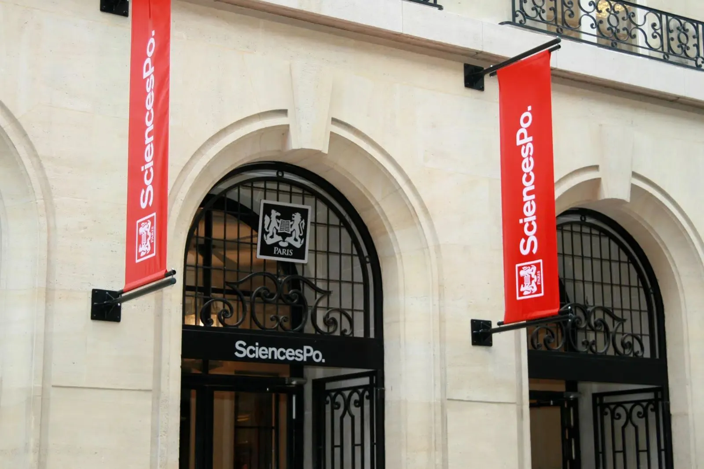

Vidéos
La plateforme en mouvement.
Le film manifeste qui pose la signature, puis huit déclinaisons courtes par thématique de formation.


Sciences Po Executive Education s'adresse à des profils déjà installés, à un moment où chaque décision d'évolution compte.
Sciences Po Executive Education s'adresse à des profils déjà installés, à un moment où chaque choix d'évolution compte. L'offre tenait, il fallait la faire parler. Concepteur-rédacteur chez Ici Barbès, je porte l'écriture de toute la plateforme.
L'axe : à mi-carrière, on ne cherche pas un diplôme de plus, on cherche une bascule. Une façon de se révéler. La signature dit exactement ça.
« Révélez-vous. »
La signature « Révélez-vous » devient l'axe de toute la plateforme. Un film manifeste qui la pose, des déclinaisons social sur Facebook, Twitter et LinkedIn, des contenus éditoriaux. Le tout tient sur 14 thématiques et 83 programmes.
Sept ans plus tard, elle est toujours en signature. Une plateforme n'a pas de meilleure preuve que sa durée.
Une offre solide ne suffit pas, il faut lui trouver les mots qui la font parler, et qui tiennent dans le temps.
Le film manifeste qui pose la signature, puis huit déclinaisons courtes par thématique de formation.
